10. Anhänge
Hier wird beschrieben, wie die in diesem Dokument verwendeten Tools auf Windows-Rechnern mit den Versionen 7 bis 10 installiert werden. Der Leser muss die Angaben an seine eigene Umgebung anpassen.
10.1. Installation von JDK
Unter URL findet man [http://www.oracle.com/technetwork/java/javase/downloads/index.html] (April 2016), die aktuellste Version ist JDK. Im Folgenden wird der Installationsordner des JDK als <jdk-install> bezeichnet.
 |
10.2. Installation des Android-Managers SDK
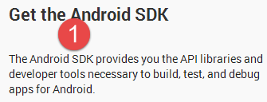 |
- in [1], warum man den Android-Manager SDK benötigt;
Der Android-Manager SDK ist unter der Adresse [https://developer.android.com/studio/index.html#downloads] (Mai 2016) zu finden.
 |
Führen Sie die Installation des SDK Managers durch. Wir bezeichnen sein Installationsverzeichnis im Folgenden als <sdk-manager-install>. Starten Sie das Programm.
Das Projekt wurde wie folgt konfiguriert (siehe Abschnitt 9.3.2):
- SDK API 23 [2];
- SDK Build-Tools 23.0.3 [3];
- SDK Tool 25.1.3 [4]
Stellen Sie sicher, dass Sie diese Komponenten heruntergeladen haben.
10.3. Installation des Genymotion-Emulator-Managers
Die mit dem Android-SDK mitgelieferten Emulatoren sind langsam, was von ihrer Nutzung abschreckt. Das Unternehmen [Genymotion] bietet einen leistungsstarken Emulator an. Dieser ist im URL [https://cloud.genymotion.com/page/launchpad/download/] (Mai 2016) verfügbar.
Sie müssen sich registrieren, um eine Version für den privaten Gebrauch zu erhalten. Laden Sie das Produkt [Genymotion] zusammen mit der virtuellen Maschine VirtualBox herunter:

Im Folgenden bezeichnen wir den Installationsordner von [Genymotion] als <genymotion-install>. Starten Sie [Genymotion]. Laden Sie anschließend ein Image für ein Tablet herunter:
 |
- in [1], fügen Sie das in [2] beschriebene virtuelle Terminal hinzu;
10.4. Installation von IDE und IntellijIDEA Community Edition
IDE [ Intellij IDEA Community Edition] ist unter URL [https://www.jetbrains.com/idea/#chooseYourEdition] verfügbar:
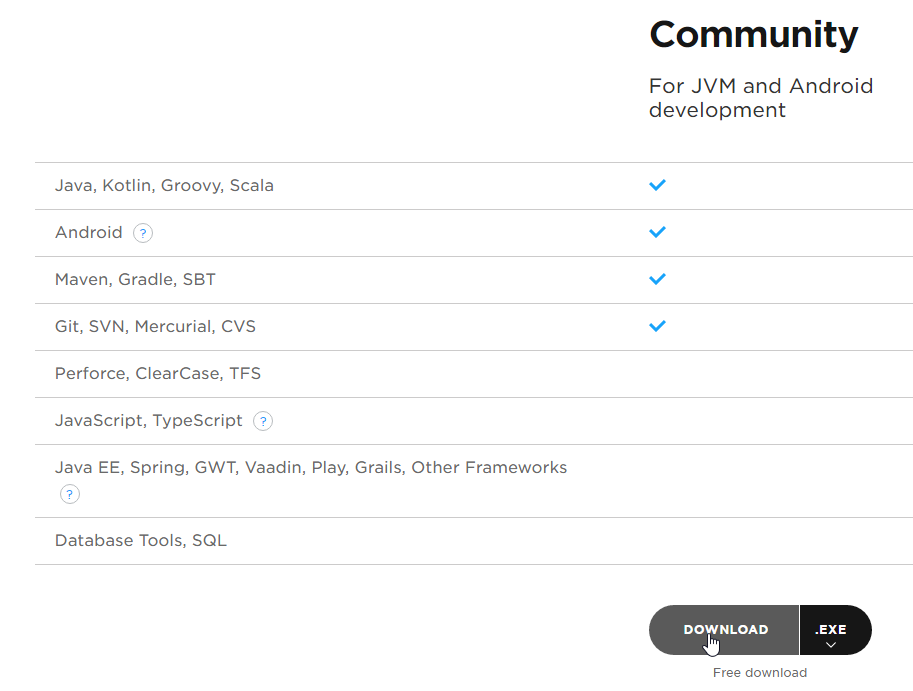 |
Installieren Sie das IDE und starten Sie es anschließend.
 | 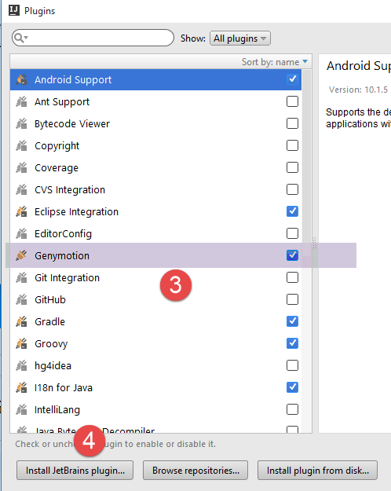 |
- Konfigurieren Sie in [1-2] die Plugins;
- in [3-4] fügen Sie dem IDE das Plugin [Genymotion] hinzu;
 |
- in [6-7]: Konfigurieren Sie IDE;
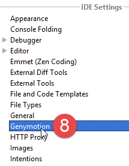 | 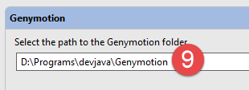 |
- in [8-9], geben Sie den Installationsordner des Emulator-Managers [Genymotion] an;
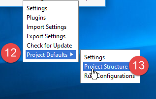 |
- In [12-13] wird die Standardart der Projekte konfiguriert;
 | 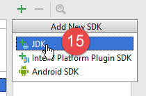 |
 |
- In [14-16] wird JDK konfiguriert;
 |
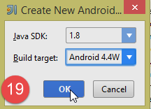 |  |
- in [17-20] wird das Android-Modell SDK konfiguriert;
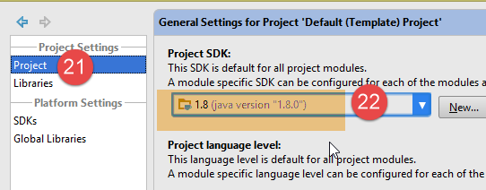 |
- In [21-22] wird JDK als Standard für die Projekte festgelegt;
 |  |
 |
- In [23-27] wird die Rechtschreibprüfung deaktiviert, die standardmäßig für die englische Sprache eingestellt ist;
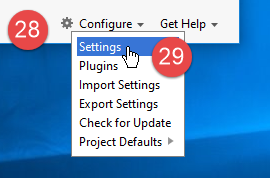 | 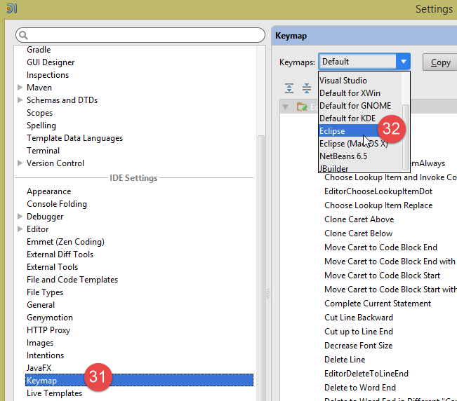 |
- Wählen Sie in [28-32] die gewünschte Art von Tastaturkürzeln aus. Sie können die Standardtastaturkürzel von IntelliJ beibehalten oder die eines anderen IDE wählen, an die Sie eher gewöhnt sind;
 |
- in [33-35]: Konfigurieren Sie die IDE-Einstellungen für mehrere Projekte. Es können mehrere Projekte im selben Fenster oder in verschiedenen Fenstern verwaltet werden;
 |
- In [36-37] sollten Sie standardmäßig die Zeilen nummerieren. So können Sie schnell die Zeile finden, die eine Ausnahme ausgelöst hat;
10.5. Verwendung der Beispiele
Die Beispielprojekte IntellijIDEA sind unter |ICI| verfügbar. In Abschnitt 1.3 wird erklärt, wie man sie öffnet.
10.6. Verwaltung des jSON „ “ in Java
Für den Entwickler transparent nutzt das Framework [Spring MVC] die Bibliothek JSON [Jackson]. Um zu veranschaulichen, was JSON (JavaScript-Objektnotation) ist, stellen wir hier ein Programm vor, das Objekte in JSON serialisiert und umgekehrt die erzeugten JSON-Zeichenketten deserialisiert, um die ursprünglichen Objekte wiederherzustellen.
Mit der Bibliothek „Jackson“ lässt sich Folgendes erstellen:
- die JSON-Zeichenkette eines Objekts: new ObjectMapper().writeValueAsString(object);
- ein Objekt aus einer Zeichenkette JSON: new ObjectMapper().readValue(jsonString, Object.class).
Beide Methoden können ein IOException auslösen. Hier ein Beispiel.
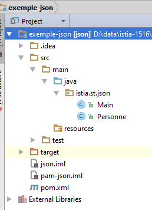 |
Das oben genannte Projekt ist ein Maven-Projekt mit der folgenden Datei: [pom.xml];
<?xml version="1.0" encoding="UTF-8"?>
<project xmlns="http://maven.apache.org/POM/4.0.0"
xmlns:xsi="http://www.w3.org/2001/XMLSchema-instance"
xsi:schemaLocation="http://maven.apache.org/POM/4.0.0 http://maven.apache.org/xsd/maven-4.0.0.xsd">
<modelVersion>4.0.0</modelVersion>
<groupId>istia.st</groupId>
<artifactId>json</artifactId>
<version>1.0-SNAPSHOT</version>
<dependencies>
<dependency>
<groupId>com.fasterxml.jackson.core</groupId>
<artifactId>jackson-databind</artifactId>
<version>2.3.3</version>
</dependency>
</dependencies>
</project>
- Zeilen 12–16: Die Abhängigkeit, die die Bibliothek „Jackson“ einbindet;
Die Klasse [Personne] sieht wie folgt aus:
package istia.st.json;
public class Personne {
// Daten
private String nom;
private String prenom;
private int age;
// Konstruktoren
public Personne() {
}
public Personne(String nom, String prénom, int âge) {
this.nom = nom;
this.prenom = prénom;
this.age = âge;
}
// Signatur
public String toString() {
return String.format("Personne[%s, %s, %d]", nom, prenom, age);
}
// Getter und Setter
...
}
Die Klasse [Main] lautet wie folgt:
package istia.st.json;
import com.fasterxml.jackson.databind.ObjectMapper;
import java.io.IOException;
import java.util.HashMap;
import java.util.Map;
public class Main {
// das Tool zur Serialisierung/Deserialisierung
static ObjectMapper mapper = new ObjectMapper();
public static void main(String[] args) throws IOException {
// Anlegen einer Person
Personne paul = new Personne("Denis", "Paul", 40);
// JSON-Anzeige
String json = mapper.writeValueAsString(paul);
System.out.println("Json=" + json);
// Instanziierung einer Person aus dem JSON
Personne p = mapper.readValue(json, Personne.class);
// Anzeige einer Person
System.out.println("Personne=" + p);
// ein Array
Personne virginie = new Personne("Radot", "Virginie", 20);
Personne[] personnes = new Personne[]{paul, virginie};
// JSON-Anzeige
json = mapper.writeValueAsString(personnes);
System.out.println("Json personnes=" + json);
// Wörterbuch
Map<String, Personne> hpersonnes = new HashMap<String, Personne>();
hpersonnes.put("1", paul);
hpersonnes.put("2", virginie);
// JSON anzeigen
json = mapper.writeValueAsString(hpersonnes);
System.out.println("Json hpersonnes=" + json);
}
}
Die Ausführung dieser Klasse erzeugt folgende Bildschirmausgabe:
Aus dem Beispiel ist Folgendes zu entnehmen:
- das Objekt [ObjectMapper], das für die Transformationen JSON / Objekt erforderlich ist: Zeile 11;
- die Transformation [Personne] --> JSON: Zeile 17;
- die Transformation JSON --> [Personne]: Zeile 20;
- die von beiden Methoden ausgelöste Ausnahme [IOException]: Zeile 13.
Inhaltsverzeichnis
1Einleitung 5
1.2Les Verwendete Werkzeuge 6
1.3Les Codes der Beispiele 6
2Ein Einführungsbeispiel 9
2.1L – Architektur der Beispielanwendung 9
2.2L – Die ausführbare Datei 9
2.3L'Synchrone Schnittstelle 11
2.4L'synchroner Aufruf 12
2.5Tests – synchrone Aufrufe 13
2.6L: Asynchrone Schnittstelle und ihre Implementierung 14
2.7L „Asynchroner Aufruf“ 16
2.8Tests: Asynchrone Aufrufe 19
2.8.1avec der Scheduler [Schedulers.io] 20
2.8.2avec der Scheduler [Schedulers.computation] 20
2.8.3avec den Terminplaner [Schedulers.newThread] 21
2.8.4avec die Scheduler [Schedulers.trampoline, Schedulers.immediate] 22
2.9Cas Grenzwerte 22
3Signaturen von generischen Klassen und Methoden 27
4Lambda-Funktionen in Java 8 32
4.1Exemple-01 – Funktionale Schnittstellen und Lambdas 32
4.2Exemple-02 – Die funktionale Schnittstelle Predicate<T> 34
4.3Exemple-03 – Die funktionale Schnittstelle Function<T,R> 37
4.4Exemple-04 – die funktionale Schnittstelle Consumer<T> 38
4.5Exemple-05 – die funktionale Schnittstelle BiConsumer<T,U> 40
4.6Exemple-06 – die funktionale Schnittstelle BiFunction<T,U,R> 41
4.7Exemple-07 – die funktionale Schnittstelle „Supplier<T>“ 43
5Der Typ Stream<T> aus Java 8 45
5.1Exemple-01 – die Klasse „Stream“ 45
5.2Exemple-02 – Parallele Verarbeitung der Elemente eines Streams 47
5.3Exemple-03 – Parallele Verarbeitung der Elemente eines Streams 48
5.4Exemple-04 – Einen Stream filtern 50
5.5Exemple-05 – Erstellen eines Streams<T2> aus einem Stream<T1> 52
5.6Exemple-06 – Weitere Methoden der Klasse Stream<T> 53
5.6.1[findFirst] 54
5.6.2[findAny] 55
5.6.3[skip] 56
5.6.4[limit] 58
5.6.5[count] 59
5.6.6[max, min] 60
5.6.7[reduce] 63
5.6.8[sorted] 63
5.6.9[anyMatch, noneMatch, allMatch] 65
5.6.10[collect(Collectors.groupingBy)] 65
5.6.11[distinct] 67
5.6.12[flatMap] 68
5.6.13 Methoden für den Fluss primitiver Zahlen 71
6Die funktionalen Schnittstellen der Bibliothek RxJava 72
6.1Exemple-01: Die Funktionsschnittstelle [Action0] 72
6.2Exemple-02, 03: die Funktionsschnittstelle [Actioni] 73
6.3Exemple-04, 05: die funktionale Schnittstelle [Funci] 74
7Die Bibliothek RxJava 77
7.1 Observables erstellen und abonnieren 77
7.1.1Exemple-01: Die Methode [Observable.from] 77
7.1.2Exemple-03: die Klasse „Observer“ 82
7.1.3Exemple-04: die Methode [Observable.create] 84
7.1.4Exemple-05: Refactoring von [Exemple-04] 86
7.2Thread – Ausführung, Beobachtungs-Thread 88
7.2.1Exemple-06: Beobachtbares und Beobachter in einem anderen Thread als [main] 88
7.2.2Exemple-07: Observable und Beobachter in zwei verschiedenen Threads 90
Vordefinierte 7.3Observables 92
7.3.1Exemple-08: Die Methode [Observable.range] 92
7.3.2Exemple-09: die Methoden von Observable.[interval, take, doNext] 96
7.3.3Exemples-10/12: die Methoden von Observable.[error, empty, never] 98
7.4.1Exemple-13: Aktions-Thread, Beobachtungs-Thread 103
7.5Combinaisons mit mehreren Beobachtungsgrößen 106
7.5.1Exemple-14: Zwei Beobachtungsgrößen mit [Observable.merge] zusammenführen 106
7.5.2Exemple-15: Zwei Observablen mit [Observable.concat] verketten 108
7.5.3Exemple-16: Zwei Observables mit [Observable.zip] kombinieren 109
7.5.4Exemple-17: Zwei Observablen mit [Observable.combineLatest] kombinieren 111
7.5.5Exemple-18: Zwei Observablen mit [Observable.amb] kombinieren 113
7.6Verarbeitungskette einer Beobachtungsgröße 114
7.6.1Exemple-19: Ein Observable mit [Observable.map] transformieren 114
7.6.2Exemple-20: Filtern eines Observables mit [Observable.filter] 116
7.6.3Exemple-21: Ein Observable mit [Observable.flapMap] transformieren 117
7.6.4Exemples-22: Weitere Methoden der Klasse [Observable] 123
7.7Les Scheduler 127
7.7.1Exemple-23: Der Scheduler [Schedulers.computation] 127
7.7.2Exemple-24: der Scheduler [Schedulers.io] 128
7.7.3Exemple-25: der Scheduler [Schedulers.newThread] 129
7.7.4Exemple-26: die Scheduler [Schedulers.immediate, Schedulers.trampoline] 130
7.8Conclusion 133
8RxJava in der Swing-Umgebung 134
8.1Introduction 134
8.2La Code-Struktur 135
8.3 Projektdurchführung 136
8.4Le Synchroner Dienst 136
8.5Le asynchroner Dienst 139
8.6L „grafische Benutzeroberfläche“ 141
8.7Instanciation der grafischen Benutzeroberfläche 143
8.8 Ausführung synchroner Abfragen 144
8.9 Ausführung asynchroner Abfragen 145
9RxJava in der Android-Umgebung 149
9.1Introduction 149
9.2Le Webdienst / jSON 149
9.2.1Le IntelliJ IDEA-Projekt 150
9.2.2Les Gradle-Abhängigkeiten des Projekts 151
9.2.3La-Schicht [métier] 153
9.2.4Le Webdienst / JSON 156
9.2.5Configuration des Spring-Projekts 160
9.2.6Ausführung des Webservers 161
9.3Le Android-Client 161
9.3.1RxAndroid 161
9.3.2Le IntelliJ IDEA-Projekt 162
9.3.3Ausführung des IntelliJ IDEA-Projekts 164
9.3.4Les Gradle-Abhängigkeiten des Projekts 166
9.3.5Le Android-App-Manifest 167
9.3.6La-Schicht [DAO] 168
9.3.6.1L – Schnittstelle [IDao] der Schicht [DAO] 168
9.3.6.2Implementierung der Schicht [DAO] 170
9.3.7Les-Ansichten der Anwendung 172
9.3.7.1La Klasse [MyFragment] 174
9.3.7.2Le Fragment [RequestFragment] der Abfrage 176
9.3.7.3Le Fragment [ResponseFragment] der Antwort 177
9.3.7.4L – Android-Aktivität [MainActivity] 178
9.3.7.5Le-Fragment [RequestFragment] 185
9.3.7.6Le-Fragment [ResponseFragment] 187
9.3.8Les Beispiele für Observablen 190
9.3.8.6Pour Weiter 202
9.3.9Conclusion 202
10Anhänge 203
10.1Installation aus einem JDK 203
10.2Installation vom SDK Android-Manager 203
10.3Installation des Genymotion-Emulator-Managers 204
10.4Installation von IDE IntellijIDEA Community Edition 205
10.5Utilisation aus den Beispielen 210
10.6Gestion aus dem jSON in Java 211